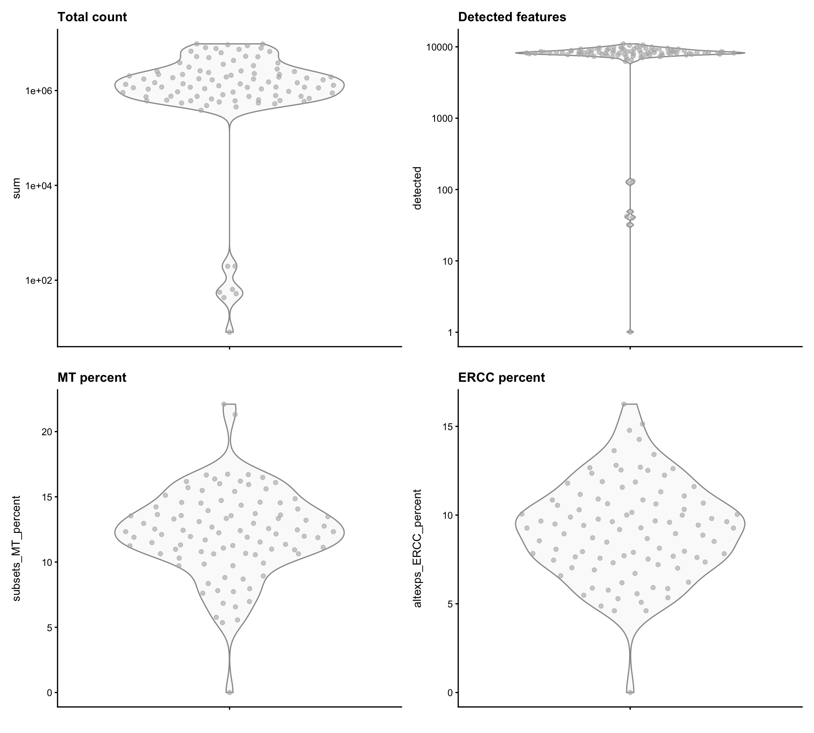
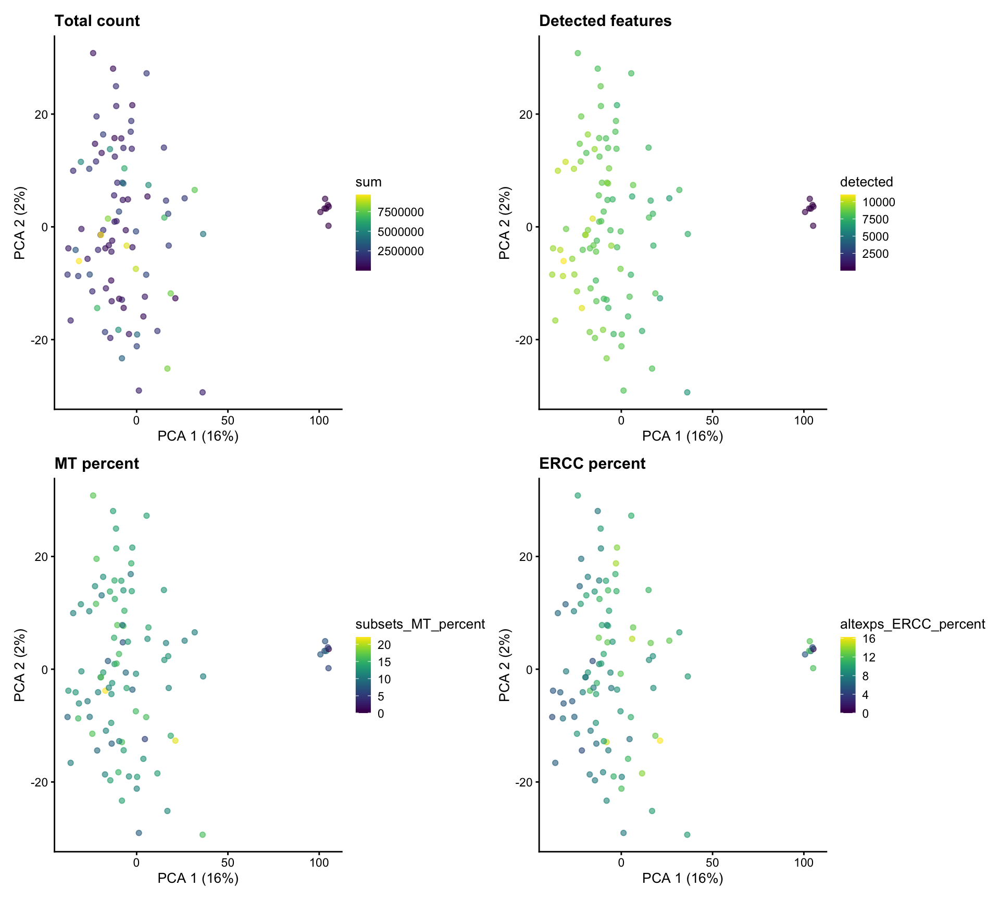
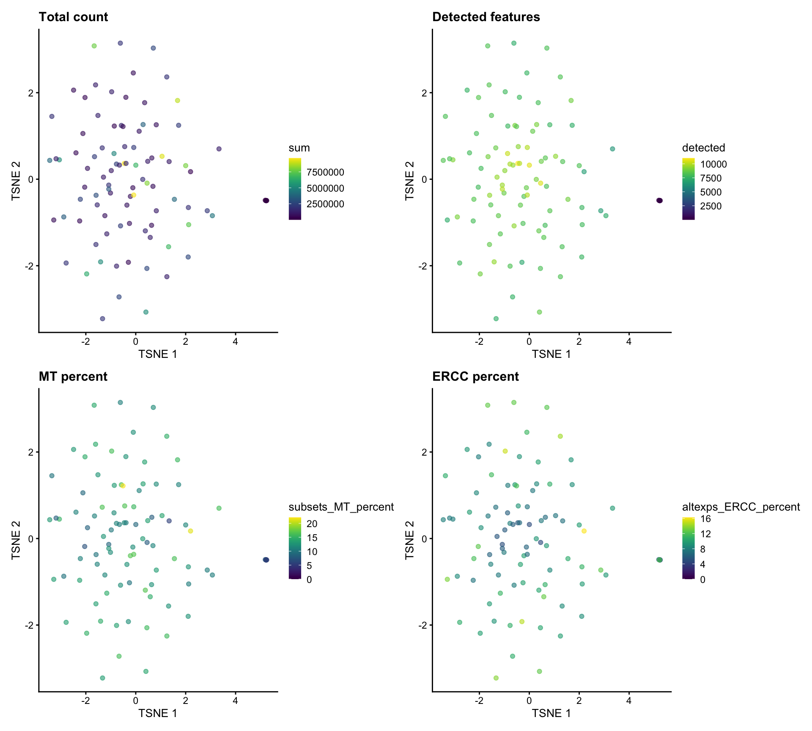
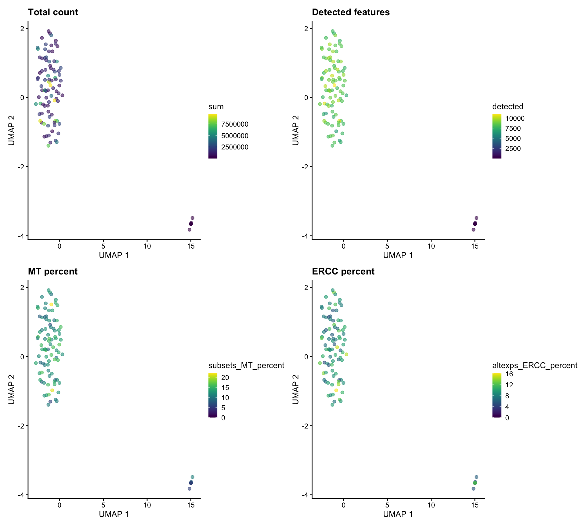
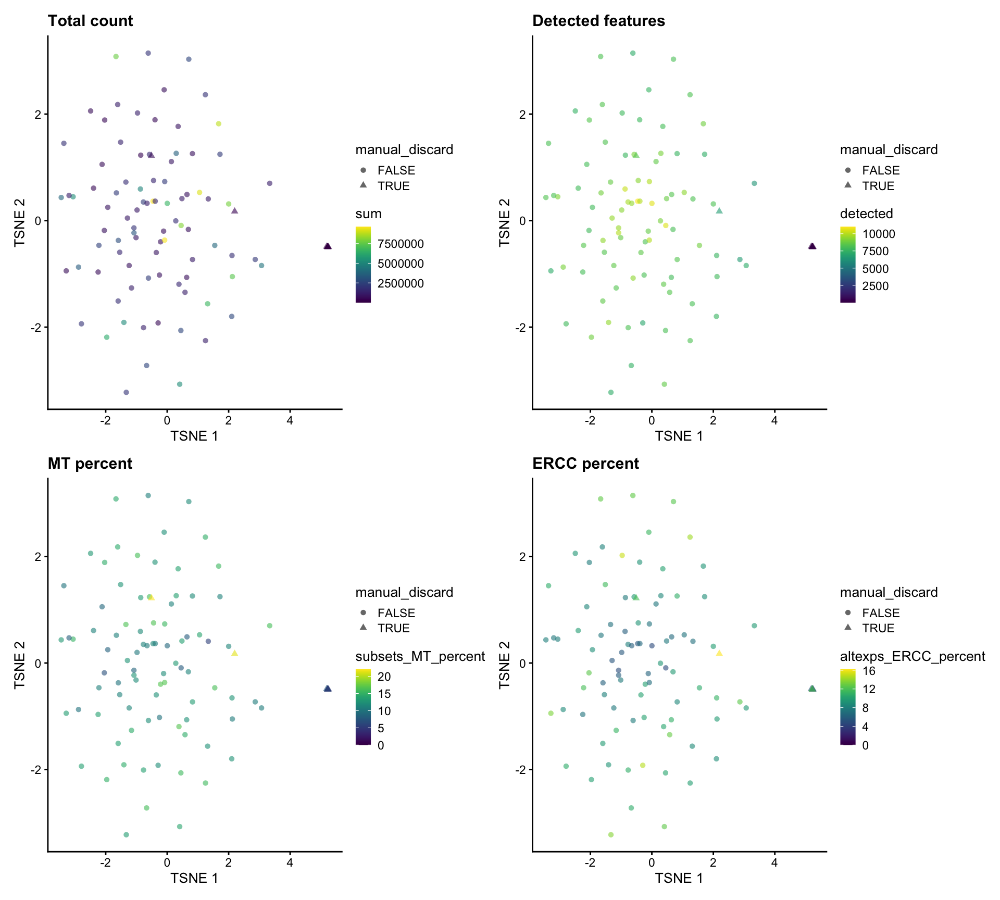
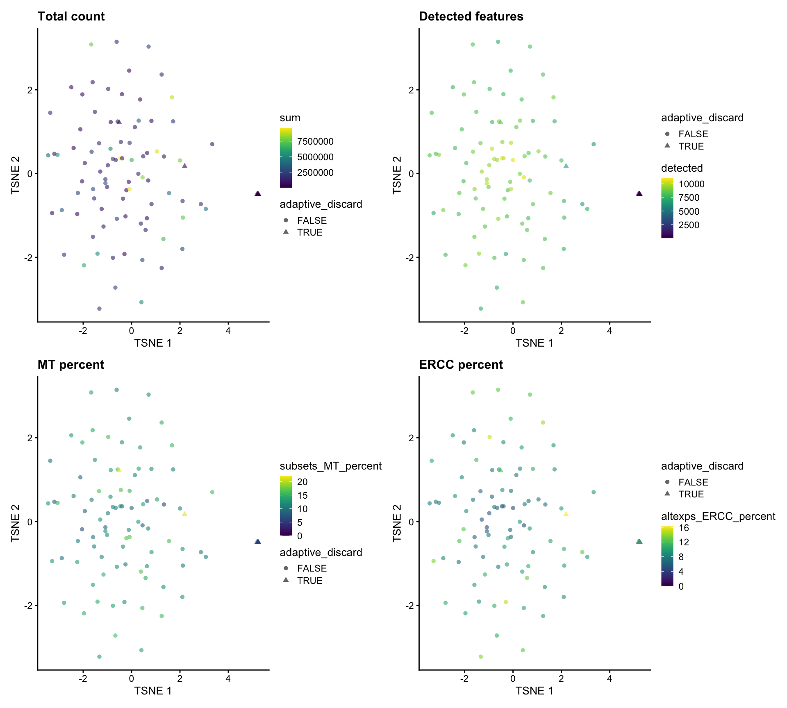

Quality control
James Ashmore
19 February, 2021
Last updated: 2021-02-19
Checks: 7 0
Knit directory: LPMP_LHF_C/
This reproducible R Markdown analysis was created with workflowr (version 1.6.2). The Checks tab describes the reproducibility checks that were applied when the results were created. The Past versions tab lists the development history.
Great! Since the R Markdown file has been committed to the Git repository, you know the exact version of the code that produced these results.
Great job! The global environment was empty. Objects defined in the global environment can affect the analysis in your R Markdown file in unknown ways. For reproduciblity it’s best to always run the code in an empty environment.
The command set.seed(52694887) was run prior to running the code in the R Markdown file. Setting a seed ensures that any results that rely on randomness, e.g. subsampling or permutations, are reproducible.
Great job! Recording the operating system, R version, and package versions is critical for reproducibility.
Nice! There were no cached chunks for this analysis, so you can be confident that you successfully produced the results during this run.
Great job! Using relative paths to the files within your workflowr project makes it easier to run your code on other machines.
Great! You are using Git for version control. Tracking code development and connecting the code version to the results is critical for reproducibility.
The results in this page were generated with repository version 2a66265. See the Past versions tab to see a history of the changes made to the R Markdown and HTML files.
Note that you need to be careful to ensure that all relevant files for the analysis have been committed to Git prior to generating the results (you can use wflow_publish or wflow_git_commit). workflowr only checks the R Markdown file, but you know if there are other scripts or data files that it depends on. Below is the status of the Git repository when the results were generated:
Ignored files:
Ignored: .DS_Store
Ignored: .Rhistory
Ignored: .Rproj.user/
Ignored: analysis/.Rhistory
Ignored: analysis/cache/
Ignored: renv/.gitignore
Ignored: renv/library/
Ignored: renv/settings.dcf
Ignored: shiny/
Ignored: slides/
Untracked files:
Untracked: analysis/backup/
Unstaged changes:
Modified: _workflowr.R
Deleted: analysis/11-atlas-neighbors.Rmd
Deleted: analysis/12-atlas-trajectory.Rmd
Deleted: analysis/13-atlas-clustering.Rmd
Deleted: analysis/14-atlas-markers.Rmd
Deleted: analysis/15-scenic-analysis.Rmd
Deleted: analysis/16-geneset-activity.Rmd
Deleted: analysis/17-haystack-analysis.Rmd
Deleted: analysis/18-cell-exploration.Rmd
Deleted: analysis/19-cell-heterogeneity.Rmd
Modified: analysis/_site.yml
Note that any generated files, e.g. HTML, png, CSS, etc., are not included in this status report because it is ok for generated content to have uncommitted changes.
These are the previous versions of the repository in which changes were made to the R Markdown (analysis/01-quality-control.Rmd) and HTML (docs/01-quality-control.html) files. If you’ve configured a remote Git repository (see ?wflow_git_remote), click on the hyperlinks in the table below to view the files as they were in that past version.
| File | Version | Author | Date | Message |
|---|---|---|---|---|
| html | 2a66265 | James Ashmore | 2021-02-19 | Build |
| html | fc61a42 | James Ashmore | 2021-02-09 | Build |
| html | 691cbbe | James Ashmore | 2021-02-04 | Build site. |
| Rmd | 5a204d7 | James Ashmore | 2021-02-04 | publish |
| html | 5a204d7 | James Ashmore | 2021-02-04 | publish |
| html | 3c10524 | James Ashmore | 2021-02-01 | Build site. |
| html | a174a64 | James Ashmore | 2021-02-01 | Build site. |
| html | 364fcb1 | James Ashmore | 2021-02-01 | Build site. |
| html | 12a8abe | James Ashmore | 2021-01-28 | Build site. |
| Rmd | 4fd49a9 | James Ashmore | 2021-01-28 | wflow_publish(files = “analysis/01-quality-control.Rmd”) |
| html | 6d5c122 | James Ashmore | 2020-10-09 | publish |
| Rmd | 2df23c6 | James Ashmore | 2020-10-09 | publish |
Introduction
In this document we are going to perform quality control on the cells.
Setup
Set chunk options:
knitr::opts_chunk$set(
autodep = TRUE,
cache = TRUE,
cache.path = "cache/01-quality-control.Rmd/",
dev = "png",
error = FALSE,
message = FALSE,
warning = FALSE
)Load required packages:
library(BiocSingular)
library(SingleCellExperiment)
library(eulerr)
library(patchwork)
library(robustbase)
library(scater)
library(scran)Read experiment data:
sce <- readRDS("data/salmon-quant.rds")Make feature names unique:
rownames(sce) <- uniquifyFeatureNames(rowData(sce)$gene_id, rowData(sce)$gene_name)Make sample names unique:
colnames(sce) <- colData(sce)$sampleExploration
We begin by exploring the dataset which contains cells and 55471 genes.
Metrics
Identify mitochondrial and reporter genes:
mit <- which(seqnames(sce) == "MT")Compute QC metrics for each cell:
sce <- addPerCellQC(sce, subsets = list(MT = mit))
dat <- as.data.frame(colData(sce))Inspect the distributions of QC metrics:
wrap_plots(
plotColData(sce, "sum") + scale_y_log10() + ggtitle("Total count"),
plotColData(sce, "detected") + scale_y_log10() + ggtitle("Detected features"),
plotColData(sce, "subsets_MT_percent") + ggtitle("MT percent"),
plotColData(sce, "altexps_ERCC_percent") + ggtitle("ERCC percent")
)
Dimensionality reduction
Calculate dimensionality reduction data:
set.seed(350218714)
sce <- computeLibraryFactors(sce)
sce <- logNormCounts(sce)
sce <- runPCA(sce, BSPARAM = ExactParam())
sce <- runTSNE(sce, dimred = "PCA")
sce <- runUMAP(sce, dimred = "PCA")Inspect dimensionality reduction plots:
PCA
patchwork::wrap_plots(
plotPCA(sce, colour_by = "sum") + ggtitle("Total count"),
plotPCA(sce, colour_by = "detected") + ggtitle("Detected features"),
plotPCA(sce, colour_by = "subsets_MT_percent") + ggtitle("MT percent"),
plotPCA(sce, colour_by = "altexps_ERCC_percent") + ggtitle("ERCC percent"),
ncol = 2
)
TSNE
patchwork::wrap_plots(
plotTSNE(sce, colour_by = "sum") + ggtitle("Total count"),
plotTSNE(sce, colour_by = "detected") + ggtitle("Detected features"),
plotTSNE(sce, colour_by = "subsets_MT_percent") + ggtitle("MT percent"),
plotTSNE(sce, colour_by = "altexps_ERCC_percent") + ggtitle("ERCC percent"),
ncol = 2
)
UMAP
patchwork::wrap_plots(
plotUMAP(sce, colour_by = "sum") + ggtitle("Total count"),
plotUMAP(sce, colour_by = "detected") + ggtitle("Detected features"),
plotUMAP(sce, colour_by = "subsets_MT_percent") + ggtitle("MT percent"),
plotUMAP(sce, colour_by = "altexps_ERCC_percent") + ggtitle("ERCC percent"),
ncol = 2
)
Cell Filtering
We will now perform filtering to remove low-quality cells:
Manual threshold
The first approach to identifying low-quality cells is to apply manual thresholds on the QC metrics:
dat <- DataFrame(
low_lib_size = sce$sum < 1e+05,
low_n_features = sce$detected < 1000,
high_subsets_MT_percent = sce$subsets_MT_percent > 20,
high_altexps_ERCC_percent = sce$altexps_ERCC_percent > 25
)
sce$manual_discard <- dat$low_lib_size | dat$low_n_features | dat$high_subsets_MT_percent | dat$high_altexps_ERCC_percentInspect distribution of QC metrics:
wrap_plots(
plotColData(sce, "sum", colour_by = "manual_discard") + scale_y_log10() + ggtitle("Total count"),
plotColData(sce, "detected", colour_by = "manual_discard") + scale_y_log10() + ggtitle("Detected features"),
plotColData(sce, "subsets_MT_percent", colour_by = "manual_discard") + ggtitle("MT percent"),
plotColData(sce, "altexps_ERCC_percent", colour_by = "manual_discard") + ggtitle("ERCC percent")
)
Inspect dimensionality reduction plots:
PCA
patchwork::wrap_plots(
plotPCA(sce, colour_by = "sum", shape_by = "manual_discard") + ggtitle("Total count"),
plotPCA(sce, colour_by = "detected", shape_by = "manual_discard") + ggtitle("Detected features"),
plotPCA(sce, colour_by = "subsets_MT_percent", shape_by = "manual_discard") + ggtitle("MT percent"),
plotPCA(sce, colour_by = "altexps_ERCC_percent", shape_by = "manual_discard") + ggtitle("ERCC percent"),
ncol = 2
)
TSNE
patchwork::wrap_plots(
plotTSNE(sce, colour_by = "sum", shape_by = "manual_discard") + ggtitle("Total count"),
plotTSNE(sce, colour_by = "detected", shape_by = "manual_discard") + ggtitle("Detected features"),
plotTSNE(sce, colour_by = "subsets_MT_percent", shape_by = "manual_discard") + ggtitle("MT percent"),
plotTSNE(sce, colour_by = "altexps_ERCC_percent", shape_by = "manual_discard") + ggtitle("ERCC percent"),
ncol = 2
)
UMAP
patchwork::wrap_plots(
plotUMAP(sce, colour_by = "sum", shape_by = "manual_discard") + ggtitle("Total count"),
plotUMAP(sce, colour_by = "detected", shape_by = "manual_discard") + ggtitle("Detected features"),
plotUMAP(sce, colour_by = "subsets_MT_percent", shape_by = "manual_discard") + ggtitle("MT percent"),
plotUMAP(sce, colour_by = "altexps_ERCC_percent", shape_by = "manual_discard") + ggtitle("ERCC percent"),
ncol = 2
)
Adaptive threshold
The next approach is to identify cells that are outliers based on the median absolute deviation for the QC metrics:
dat <- quickPerCellQC(colData(sce), percent_subsets = c("subsets_MT_percent", "altexps_ERCC_percent"))
sce$adaptive_discard <- dat$discardInspect distribution of QC metrics:
wrap_plots(
plotColData(sce, "sum", colour_by = "adaptive_discard") + scale_y_log10() + ggtitle("Total count"),
plotColData(sce, "detected", colour_by = "adaptive_discard") + scale_y_log10() + ggtitle("Detected features"),
plotColData(sce, "subsets_MT_percent", colour_by = "adaptive_discard") + ggtitle("MT percent"),
plotColData(sce, "altexps_ERCC_percent", colour_by = "adaptive_discard") + ggtitle("ERCC percent")
)
Inspect dimensionality reduction plots:
PCA
patchwork::wrap_plots(
plotPCA(sce, colour_by = "sum", shape_by = "adaptive_discard") + ggtitle("Total count"),
plotPCA(sce, colour_by = "detected", shape_by = "adaptive_discard") + ggtitle("Detected features"),
plotPCA(sce, colour_by = "subsets_MT_percent", shape_by = "adaptive_discard") + ggtitle("MT percent"),
plotPCA(sce, colour_by = "altexps_ERCC_percent", shape_by = "adaptive_discard") + ggtitle("ERCC percent"),
ncol = 2
)
TSNE
patchwork::wrap_plots(
plotTSNE(sce, colour_by = "sum", shape_by = "adaptive_discard") + ggtitle("Total count"),
plotTSNE(sce, colour_by = "detected", shape_by = "adaptive_discard") + ggtitle("Detected features"),
plotTSNE(sce, colour_by = "subsets_MT_percent", shape_by = "adaptive_discard") + ggtitle("MT percent"),
plotTSNE(sce, colour_by = "altexps_ERCC_percent", shape_by = "adaptive_discard") + ggtitle("ERCC percent"),
ncol = 2
)
UMAP
patchwork::wrap_plots(
plotUMAP(sce, colour_by = "sum", shape_by = "adaptive_discard") + ggtitle("Total count"),
plotUMAP(sce, colour_by = "detected", shape_by = "adaptive_discard") + ggtitle("Detected features"),
plotUMAP(sce, colour_by = "subsets_MT_percent", shape_by = "adaptive_discard") + ggtitle("MT percent"),
plotUMAP(sce, colour_by = "altexps_ERCC_percent", shape_by = "adaptive_discard") + ggtitle("ERCC percent"),
ncol = 2
)
Outlier threshold
The last approach is to identify outliers in high-dimensional space based on the QC metrics for each cell:
mat <- cbind(log10(sce$sum), log10(sce$detected), sce$subsets_MT_percent, sce$altexps_ERCC_percent)
adj <- adjOutlyingness(mat, only.outlyingness = TRUE)
out <- isOutlier(adj, type = "higher")
sce$outlier_discard <- outInspect distribution of QC metrics:
wrap_plots(
plotColData(sce, "sum", colour_by = "outlier_discard") + scale_y_log10() + ggtitle("Total count"),
plotColData(sce, "detected", colour_by = "outlier_discard") + scale_y_log10() + ggtitle("Detected features"),
plotColData(sce, "subsets_MT_percent", colour_by = "outlier_discard") + ggtitle("MT percent"),
plotColData(sce, "altexps_ERCC_percent", colour_by = "outlier_discard") + ggtitle("ERCC percent")
)
Inspect dimensionality reduction plots:
PCA
patchwork::wrap_plots(
plotPCA(sce, colour_by = "sum", shape_by = "outlier_discard") + ggtitle("Total count"),
plotPCA(sce, colour_by = "detected", shape_by = "outlier_discard") + ggtitle("Detected features"),
plotPCA(sce, colour_by = "subsets_MT_percent", shape_by = "outlier_discard") + ggtitle("MT percent"),
plotPCA(sce, colour_by = "altexps_ERCC_percent", shape_by = "outlier_discard") + ggtitle("ERCC percent"),
ncol = 2
)
TSNE
patchwork::wrap_plots(
plotTSNE(sce, colour_by = "sum", shape_by = "outlier_discard") + ggtitle("Total count"),
plotTSNE(sce, colour_by = "detected", shape_by = "outlier_discard") + ggtitle("Detected features"),
plotTSNE(sce, colour_by = "subsets_MT_percent", shape_by = "outlier_discard") + ggtitle("MT percent"),
plotTSNE(sce, colour_by = "altexps_ERCC_percent", shape_by = "outlier_discard") + ggtitle("ERCC percent"),
ncol = 2
)
UMAP
patchwork::wrap_plots(
plotUMAP(sce, colour_by = "sum", shape_by = "outlier_discard") + ggtitle("Total count"),
plotUMAP(sce, colour_by = "detected", shape_by = "outlier_discard") + ggtitle("Detected features"),
plotUMAP(sce, colour_by = "subsets_MT_percent", shape_by = "outlier_discard") + ggtitle("MT percent"),
plotUMAP(sce, colour_by = "altexps_ERCC_percent", shape_by = "outlier_discard") + ggtitle("ERCC percent"),
ncol = 2
)
Comparison
Compare the number of cells selected between methods using an Euler diagram:
mat <- cbind(Keep = TRUE, Manual = sce$manual_discard, Adaptive = sce$adaptive_discard, Outlier = sce$outlier_discard)
fit <- euler(mat, shape = "circle")
col <- RColorBrewer::brewer.pal(n = 4, name = "Pastel2")
plot(fit, fill = col, quantities = TRUE)
Selection
We are going to use the adaptive filtering to remove low quality cells:
sce <- sce[, !sce$adaptive_discard]Gene filtering
Compute QC metrics for each gene:
sce <- addPerFeatureQC(sce)
dat <- as.data.frame(rowData(sce))Expression rate
Plot the distribution of log-means across all genes:
ggplot(dat, aes(mean)) +
geom_histogram(bins = 100, colour = "black", fill = "grey") +
scale_x_log10(n.breaks = 10) +
theme_bw()
Define lowly expressed genes using a mean threshold:
dat$low_mean <- dat$mean < 1Tabulate the number of lowly expressed genes:
knitr::kable(table(dat$low_mean), col.names = c("Lowly expressed", "Count"))| Lowly expressed | Count |
|---|---|
| FALSE | 14376 |
| TRUE | 41095 |
Detection rate
Plot the percentage of expressing cells against the log-mean expression for each gene:
ggplot(dat, aes(mean, detected)) +
geom_point(alpha = 0.1, colour = "grey") +
geom_smooth(colour = "black", se = FALSE) +
scale_x_log10(n.breaks = 10) +
theme_bw()
Define lowly detected genes as having a minimum of 1 read in at least 1 percent of cells:
dat$low_detected <- !rowSums(counts(sce) >= 1) >= (ncol(sce) * 0.01)Tabulate the number of lowly detected genes:
knitr::kable(table(dat$low_detected), col.names = c("Lowly detected", "Count"))| Lowly detected | Count |
|---|---|
| FALSE | 25003 |
| TRUE | 30468 |
Comparison
Compare the number of genes selected between methods using an Euler diagram:
mat <- cbind(Keep = TRUE, Mean = dat$low_mean, Freq = dat$low_detected)
fit <- euler(mat, shape = "circle")
col <- RColorBrewer::brewer.pal(n = 3, name = "Pastel2")
plot(fit, fill = col, quantities = TRUE)
Selection
Bookmark low abundance and frequency genes (no filtering is performed because of data integration):
rowData(sce) <- cbind(rowData(sce), dat[, c("low_mean", "low_detected")])Summary
After quality control we have a dataset with 87 cells and 55471 genes.
Output
Save experiment object to disk:
saveRDS(sce, "output/01-quality-control.rds")Session
Print session information:
sessionInfo()R version 4.0.2 (2020-06-22)
Platform: x86_64-apple-darwin17.0 (64-bit)
Running under: macOS Catalina 10.15.7
Matrix products: default
BLAS: /Library/Frameworks/R.framework/Versions/4.0/Resources/lib/libRblas.dylib
LAPACK: /Library/Frameworks/R.framework/Versions/4.0/Resources/lib/libRlapack.dylib
locale:
[1] en_GB.UTF-8/en_GB.UTF-8/en_GB.UTF-8/C/en_GB.UTF-8/en_GB.UTF-8
attached base packages:
[1] parallel stats4 stats graphics grDevices datasets utils
[8] methods base
other attached packages:
[1] scran_1.18.3 scater_1.18.3
[3] ggplot2_3.3.3 robustbase_0.93-7
[5] patchwork_1.1.1 eulerr_6.1.0
[7] SingleCellExperiment_1.12.0 SummarizedExperiment_1.20.0
[9] Biobase_2.50.0 GenomicRanges_1.42.0
[11] GenomeInfoDb_1.26.2 IRanges_2.24.1
[13] S4Vectors_0.28.1 BiocGenerics_0.36.0
[15] MatrixGenerics_1.2.0 matrixStats_0.57.0
[17] BiocSingular_1.6.0 workflowr_1.6.2
loaded via a namespace (and not attached):
[1] nlme_3.1-151 bitops_1.0-6
[3] fs_1.5.0 RColorBrewer_1.1-2
[5] rprojroot_2.0.2 tools_4.0.2
[7] R6_2.5.0 irlba_2.3.3
[9] vipor_0.4.5 mgcv_1.8-33
[11] uwot_0.1.10 DBI_1.1.1
[13] colorspace_2.0-0 withr_2.4.1
[15] tidyselect_1.1.0 gridExtra_2.3
[17] compiler_4.0.2 git2r_0.28.0
[19] BiocNeighbors_1.8.2 DelayedArray_0.16.1
[21] labeling_0.4.2 scales_1.1.1
[23] DEoptimR_1.0-8 stringr_1.4.0
[25] digest_0.6.27 rmarkdown_2.6
[27] XVector_0.30.0 pkgconfig_2.0.3
[29] htmltools_0.5.1.1 sparseMatrixStats_1.2.0
[31] highr_0.8 limma_3.46.0
[33] rlang_0.4.10 rstudioapi_0.13
[35] FNN_1.1.3 DelayedMatrixStats_1.12.2
[37] generics_0.1.0 farver_2.0.3
[39] BiocParallel_1.24.1 dplyr_1.0.3
[41] RCurl_1.98-1.2 magrittr_2.0.1
[43] GenomeInfoDbData_1.2.4 scuttle_1.0.4
[45] Matrix_1.3-2 Rcpp_1.0.6
[47] ggbeeswarm_0.6.0 munsell_0.5.0
[49] viridis_0.5.1 lifecycle_0.2.0
[51] stringi_1.5.3 whisker_0.4
[53] yaml_2.2.1 edgeR_3.32.1
[55] zlibbioc_1.36.0 Rtsne_0.15
[57] grid_4.0.2 promises_1.1.1
[59] dqrng_0.2.1 crayon_1.3.4
[61] lattice_0.20-41 splines_4.0.2
[63] cowplot_1.1.1 beachmat_2.6.4
[65] polylabelr_0.2.0 locfit_1.5-9.4
[67] knitr_1.30 pillar_1.4.7
[69] igraph_1.2.6 codetools_0.2-18
[71] glue_1.4.2 evaluate_0.14
[73] renv_0.12.5 vctrs_0.3.6
[75] httpuv_1.5.5 polyclip_1.10-0
[77] gtable_0.3.0 purrr_0.3.4
[79] assertthat_0.2.1 xfun_0.20
[81] rsvd_1.0.3 RSpectra_0.16-0
[83] later_1.1.0.1 viridisLite_0.3.0
[85] tibble_3.0.5 beeswarm_0.2.3
[87] bluster_1.0.0 statmod_1.4.35
[89] ellipsis_0.3.1